第一期定项目怎么建、怎么配。第二期定谁能登录、谁能看见哪些行、页内按钮怎么授权。本期把采集中心和文章管理拉成一条链路：料从哪里进来，什么时候过人，分发到哪里，什么时候变成文章，文章按什么权限出现。
本稿页面是 TG 采集配置、网站采集配置、素材管理、文章列表、文章编辑。网站从申请到可用，还要在方舟 Admin 处理接入请求，见 FZ-C-07。项目字段、登录、菜单权限和数据档沿用前两期，这里只写它们在这条链路上怎么生效。FZ-C-01 是总流程图，后面按页面写。
审核判定沿用现网广告过滤和初筛，阈值仍由现网配置维护。人工复核线默认 6 分，高风险线默认 10 分，清晰度、热度、完整性默认 0.1。触发人工复核的三条是：广告分到了复核线但还没到高风险线；三项里有低于阈值的；视频没有音轨。高风险、直接拦截、口播或图片被判成广告、没有媒体、媒体全部下载失败或文件无效，走垃圾，不进待审核，也不进池。
| 功能ID | 模块 | 名称 | 描述 | 备注 |
|---|---|---|---|---|
| FZ-C-01 | 数据流 | 素材与文章总流程 | 从采集到推送的总流程。瓜站 / 视频站走转编辑和文章推送；短剧站不走转编辑，直接推分集媒体。含自动和手动两段闸门。 | 说明模块，没有单独菜单。 |
| FZ-C-02 | 采集 | TG 采集配置 | 采集号、频道、路由决定料进哪个项目池，以及要不要推 TG。日常只开/关采集。 | 一个 TG 号只在一个项目或公共池。 |
| FZ-C-03 | 采集 | 网站采集配置 | 申请、编辑、删除、启动/暂停网站；申请后说明窗约 2～3 工作日。绑定项目决定料进哪些池。 | 跨主账号同站复用见 FZ-C-07。 |
| FZ-C-07 | Admin | 网站接入请求 | 在现有方舟 Admin 增加网站接入请求列表。可查看申请、标记接入完成或无法接入。完成后运营端自动变为生效中。 | 运营端与 Demo 无此页；与 FZ-A-13 同属 Admin。 |
| FZ-C-04 | 素材 | 素材管理 | 待审核只有通过和驳回。公共池和每个项目池各留一份。瓜站 / 视频站转编辑；短剧在项目池推送。垃圾只能手动通过。 | 转编辑和短剧推送都在分发进项目池之后。 |
| FZ-C-05 | 文章 | 文章列表 | 有项目归属的瓜站 / 视频站稿。按状态出编辑、重新编辑、重试、释放占用、预览、版本对比、原素材、删除。短剧不出现。 | 状态仅四档对外。 |
| FZ-C-06 | 文章 | 文章编辑 | 待编辑可改标题正文、发布属性、封面；右侧文章素材可插入/选封面。自动推送默认关。 | 推送带项目通道；CMS 为操作子账号或项目默认。 |
FZ-C-01
一条内容从采集到推送给业务方，先共用判重、门槛、分发。待审核只是门槛，上面只有「通过」和「驳回」。过了门槛之后，按采集配置写入公共池和项目池，必要时再推 TG 频道。
进入项目池之后，按项目类型分两条路。瓜站和视频站走「转编辑 → 文章编辑 → 推送」。短剧站不走转编辑，也不进文章列表，素材加工完成后按推送规则把分集媒体推到该项目内容通道。
项目配置里有两段闸门。「① 素材进编辑」控制瓜站 / 视频站要不要自动转编辑。「② 推送给业务方」控制内容就绪后要不要自动推送。两段上线默认都是手动。页面上始终保留手动按钮。推送时带上该项目内容通道，以及 CMS 标识：操作子账号有 CMS 则用子账号的，否则用项目「默认 CMS 标识」（主账号操作与自动推送都走默认）；自动推送时操作人记为「自动」。
TG 频道消息，或网站采集任务抓到的页面，各生成一条待判定素材。
谁能产生：TG 或网站菜单，且配置落在当前主账号内。子账号只能把网站勾到自己负责的项目或公共池。
15 天内，文案、图片或视频指纹相同，算同一条内容。公共池只留一份最新的。每个项目池也只留一份。
这个项目还没占用：旧行从待审核、公共池、项目池、垃圾里拿掉，新的一份重新走门槛。
这个项目已经占用：原文章或已推送结果保留。该项目池仍只一行，状态「已使用」。新的一份不在这个项目池再出现一行。
谁能看见判重结果：跟这条当前所在的列表相同。待审核和垃圾只给来源主账号本组。公共池在通过之后给全平台。项目池给负责该项目的人。
触发人工复核：进入「待审核素材」。来源主账号及其子账号能看见，其他主账号看不见。
没触发且初筛通过：不进待审核，直接进入第 4 步分发。
高风险、直接拦截、无有效媒体：不进待审核，不进池，直接进入垃圾。
视同过了门槛，进入第 4 步分发。其他主账号从这个时刻起可以在公共池看到。
按钮「通过」。有素材管理菜单，且是来源主账号本组。
进入垃圾。不进公共池，也不进项目池。
按钮「驳回」。同一可见范围。
公共池写入这一份最新内容。全平台有素材菜单的人都能看。
采集配置绑了哪些项目，就各写进这些项目的素材池，每个项目一份。只绑公共池、没有项目的，不进任何项目池，后面也不会转编辑或推业务方。
来源主账号配了 TG 路由时，按那组频道外推。网站来源不推 TG。没配频道就只留池。
频道配置只有来源主账号本组能改。其他主账号在公共池里只能看已分发频道，不能改路由。
走第 5 步转编辑，再进文章，再推送。文章列表和文章编辑只服务这两类项目。
不走转编辑，不进文章列表和文章编辑。跳到第 7 步「短剧媒体推送」。
项目「① 素材进编辑」为人工时，项目池出现「转编辑」。操作者只能转到自己负责的这个项目。每个项目一次。
有素材菜单，且该项目在负责范围内。确认后项目标「已使用」，并生成文章。
项目「① 素材进编辑」为自动时，分发进该项目池后直接生成文章，项目标「已使用」。不要求人点按钮。
文章仍按项目权限出现在文章列表。操作人记为「自动」。
先「生成中」，完成后「待编辑」。人可以改正文和封面，点「保存」仍停在待编辑。
有这个项目的数据权限，并且有文章管理权限，才能打开这篇。没有项目的稿不进文章管理。
释放占用或删除文章后，该项目可以再转一次。公共池里的这一份还在。
项目「② 推送给业务方」为人工时，文章编辑页出现「推送」。点确认后推到该项目内容通道。
推送身份 = 项目内容通道 + CMS 标识（子账号有则用子账号，否则用项目默认 CMS）。成功后状态「已推送」。
项目「② 推送给业务方」为自动时，文章到达「待编辑」且内容就绪后，系统直接推到该项目内容通道。页面仍保留「推送」，给还没自动完成或失败重试用。
推送身份 = 项目内容通道 + 项目默认 CMS 标识。操作人记为「自动」。
短剧项目池里的料按「内容生成规则」做去水印 / 加水印等加工。不生成文章，文章列表不出现新行。
加工完成后看「② 推送给业务方」。自动推送打开时，系统按「推送全部分集」等规则，把分集媒体推到该项目内容通道，项目标「已使用」。
自动推送关闭时，项目池出现「推送」，不出现「转编辑」。有素材菜单且负责该项目的人确认后推送。成功后同样标「已使用」。
推送身份与瓜站 / 视频站相同：项目内容通道 + CMS（子账号优先，否则项目默认）；自动推送用项目默认 CMS，操作人记「自动」。
系统拦截直接进入。待审核驳回也进入。列表里只有「手动通过」。
手动通过视同门槛通过，从第 4 步分发接着走，不回待审核。
只给来源主账号本组。其他主账号看不见。
公共池和还没占用的项目池不再展示，也不能再转编辑或推送给没占用过的项目。
已经生成的文章和已推送结果留着。已经「已使用」的项目保持占用，不因为过期再处理第二次。
过期后再采到，算新的一条，从第 2 步重新走。没占用过的项目可以再走一次。
内容身份在 15 天内保持一个。新采到的未使用副本替换旧副本的待审核、池和垃圾记录，并重新进入门槛。已占用的项目另留占用记录。瓜站 / 视频站占用指向文章。短剧站占用指向已推送的媒体任务。都不跟随新副本改写。
过了门槛的副本写入公共池，并按采集配置写入项目池。TG 路由只读来源主账号已保存的频道。瓜站 / 视频站转编辑后写入文章，文章必须带项目 id。推送请求带项目内容通道与 CMS 标识（子账号优先，否则项目默认 CMS）。文章列表按项目 id 与当前用户的负责项目求交，再要求会话里有文章管理权限。
| 所在位置 | 谁看得见 | 谁能操作 |
|---|---|---|
| 待审核、垃圾 | 来源主账号及其子账号，且有素材菜单 | 本组可点通过、驳回或手动通过 |
| 公共池 | 有素材菜单的全部主账号 | 已分发频道只读。转编辑和推业务方不在这一行上完成 |
| 项目池 · 瓜站 / 视频站 | 负责该项目、且有素材菜单的人 | 未使用可「转编辑」一次。已使用不能再转 |
| 项目池 · 短剧站 | 负责该项目、且有素材菜单的人 | 未使用可「推送」分集媒体一次。已使用不能再推。没有「转编辑」 |
| 文章 | 负责该项目、且有文章管理权限的人 | 保存、推送、重新编辑、重试、释放占用、删除，按稿件状态出现。短剧无文章行 |
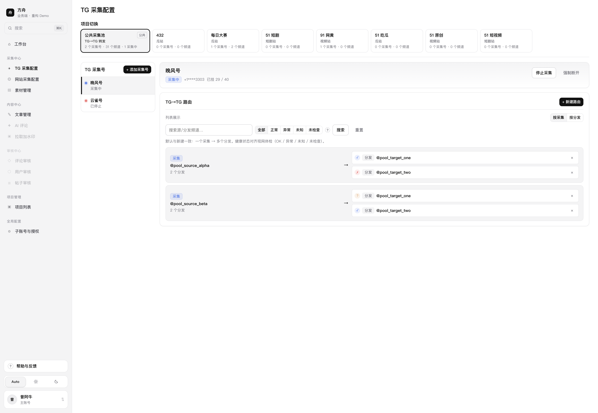
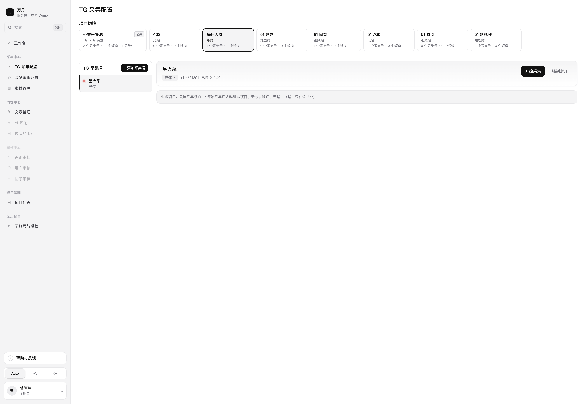
FZ-C-02
这一页按「项目 → 采集号 → 频道 → 路由」四块配置 TG 采集。先选当前上下文（公共采集池或某个业务项目），再管这个上下文下的采集号，再给号挂频道。路由只在公共池出现，负责 TG→TG 外推。
采集号挂在业务项目上时，过了门槛的料写入该项目素材池，并进公共池，不按路由外推。采集号挂在公共池时，料只留公共池；有路由则再推到分发频道。一个 TG 号只能在一个项目或公共池里。业务项目只有采集频道，没有分发频道，也没有路由。
可见范围沿用第二期：公共池配置在主账号内共享；项目上的号和频道跟着负责项目走。用户只管理一层开/关「开始采集 / 停止采集」。会话建连与释放由系统处理，日常不要求理解「连接」和「监听」两层。
当前选中的项目或公共池决定后续读写范围。采集号和频道挂在该上下文上。公共池记录属于主账号；项目记录带项目 id。路由只挂公共池。素材入库时带上来源采集号和来源主账号，供门槛、分发和权限使用。
对用户可见的采集状态只有采集中和已停止。会话是否在线由系统维护：开始采集与频道、路由操作会按需建连；停止采集默认保留会话；强制断开才释放会话。
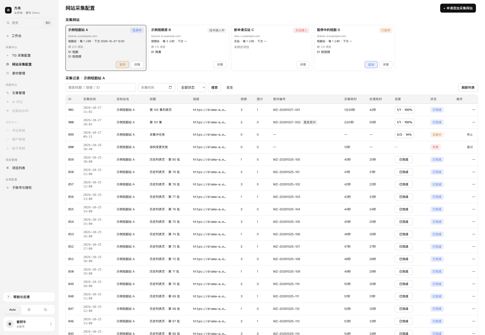
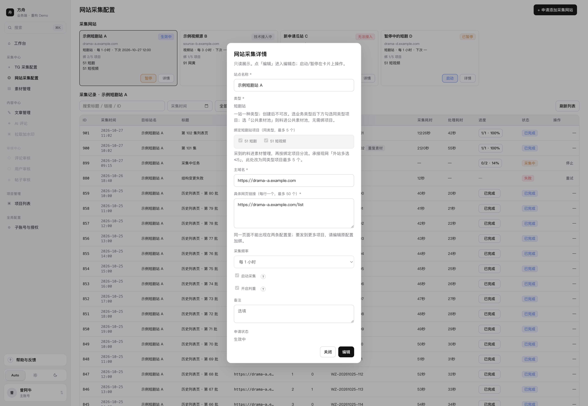
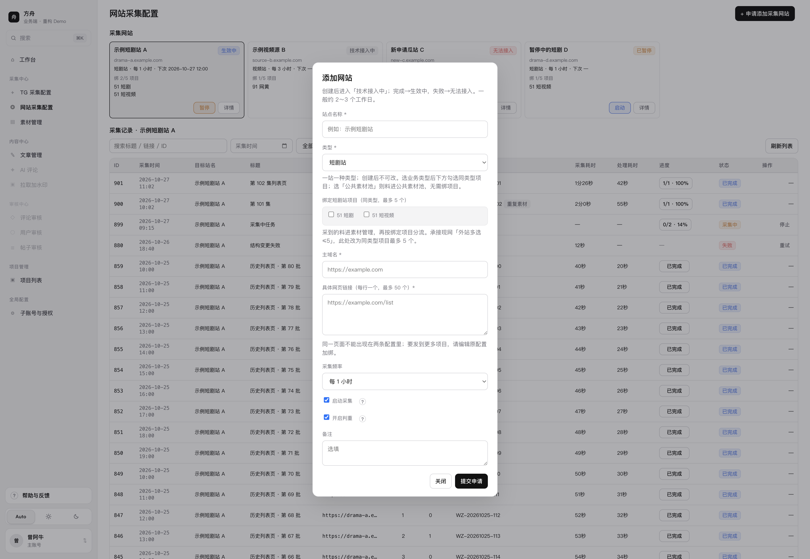
FZ-C-03
本页上下两块：上方是本主账号的采集网站卡片；下方是采集记录。网站按主账号保存，一行一个配置。过了门槛之后，写入公共池，并写入该站勾中的每一个项目池。类型选「公共素材池」时不绑业务项目，料只进公共池。网站来源不推 TG。
站点生命周期：申请添加 →「技术接入中」→ 方舟 Admin 在接入请求列表里处理（见 FZ-C-07）→ 标记完成后运营端自动变为「生效中」，标记失败则为「无法接入」。生效中与已暂停可互相切换。技术接入中整表只读。无法接入可编辑后「重新提交」，再次进入技术接入中并回到 Admin 列表。
有网站菜单的人看见本主账号全部网站和全部采集记录。保存绑定时，只能改自己负责的项目和公共池；已经绑在自己不负责的项目上的关系只展示，不能勾上，也不能取消。
网站和采集记录挂在主账号上。项目绑定是网站上的多值字段，保存时只提交当前用户有权改的项目 id，其余原样保留。类型字段创建后只读。删除网站只删配置行，不级联删历史记录。
采集输出进入素材管道，不在网站表里按项目复制一行。项目池的行在分发阶段按当时绑定写入。公共素材池类型不写业务项目池。技术接入中与无法接入、生效中之间的状态切换，以 Admin FZ-C-07 写入为准；运营端只读到结果。
FZ-C-07
在现有方舟 Admin 增加「网站接入请求」列表。运营端提交申请或重新提交后，请求出现在这里。Admin 查看配置、完成技术对接，并改状态。改完后运营端网站卡片状态同步变化，不需要运营再点一次确认。
方舟 Admin 是对内后台。运营端侧栏没有入口。重构 Demo 不做 Admin 页，本稿只写能力，不配截图。与 FZ-A-13 主账号配置同属 Admin。
Admin 与运营端读写同一条网站配置记录的状态字段与失败原因。标记接入完成写入状态「生效中」并清空失败原因。标记无法接入写入状态「无法接入」与失败原因。运营端列表与详情只读这些字段，不在运营端提供同等改状态入口。
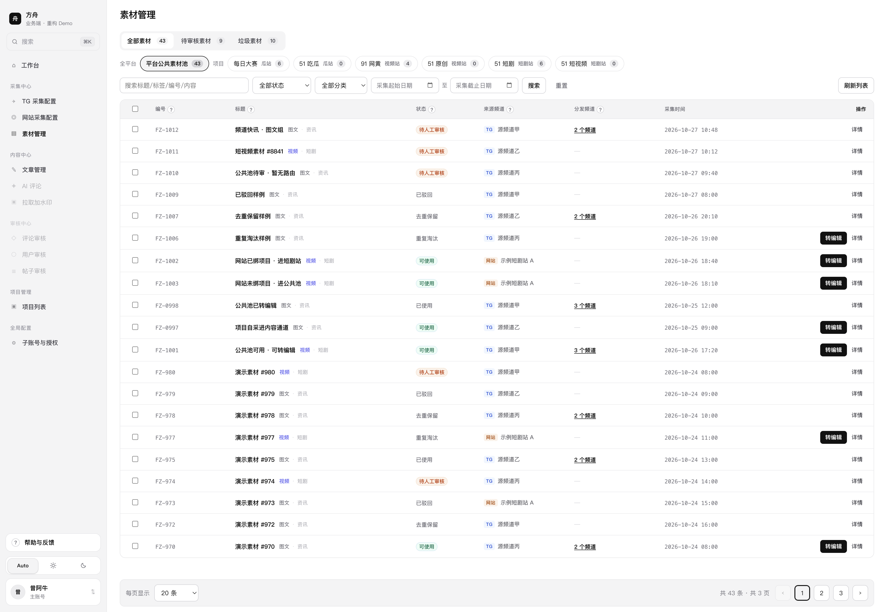
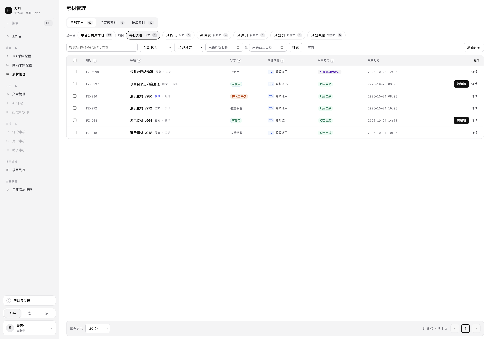
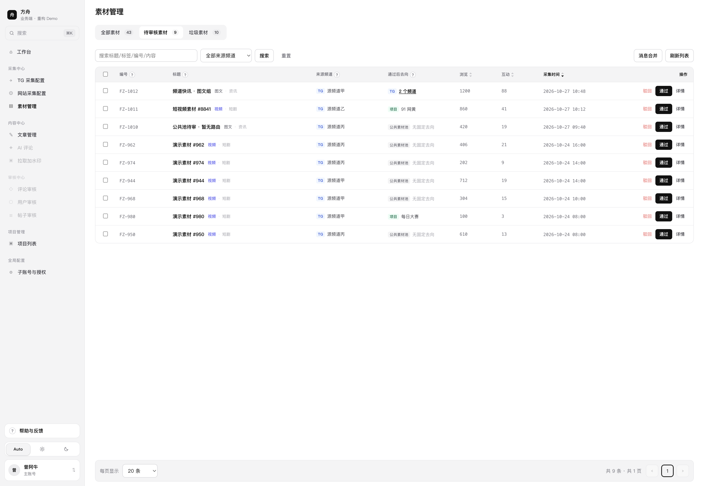
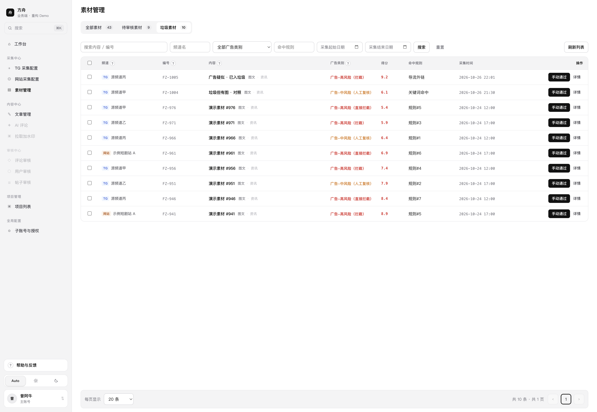
FZ-C-04
素材页有三个列表：全部素材、待审核素材、垃圾素材。全部素材用同一排范围条，默认「平台公共素材池」，后面是当前用户负责的项目。公共池是全平台一份已通过的料。点项目只看这个项目池里的那一份，不把料从公共池拿走。
待审核是门槛。行上是「通过」和「驳回」。通过进入分发。驳回进入垃圾。系统拦截不经过这个列表，直接出现在垃圾。垃圾行上只有「手动通过」，手动通过后从分发接着走。
瓜站 / 视频站的项目池，未使用行有「转编辑」。确认后该项目变为「已使用」，并生成文章。自动转编辑打开时，分发后直接变成已使用，不需要人点。已使用行不能再转，可打开已有文章。
短剧站的项目池不出现「转编辑」。媒体加工完成后，自动推送关闭时行上是「推送」；打开时系统直接推分集媒体。成功后标「已使用」。短剧不进文章列表。
以上短剧「素材加工完成后直接推送、不经转编辑」是本期口径。后续可能改为短剧也先进入可编辑环节再推送，而不是从素材直接推。届时「文章编辑」更宜演进为「内容编辑」：除文章外，把视频编辑、图片编辑等二次加工能力收拢到同一处，加工完成后再推送。本稿仍按本期实现与验收，开发只需知悉方向，本期不改交互、字段与验收项。
待审核和垃圾按来源主账号过滤。公共池在通过或等价的自动过线之后不再按主账号过滤。项目池是分发时写入的项目副本，一条内容在一个项目里只有当前这一行，状态是未使用或已使用。
瓜站 / 视频站转编辑写入文章时带上项目 id 和内容身份。短剧推送写入媒体推送任务，同样带项目 id。已使用指向对应结果。判重替换未使用行时更换池内指针。已使用指针保持原结果。满 15 天只让未使用的池内行不可见。
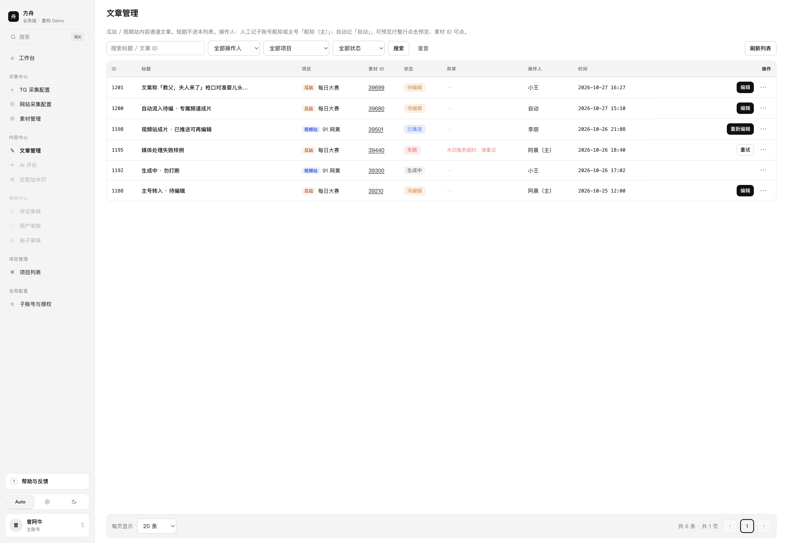
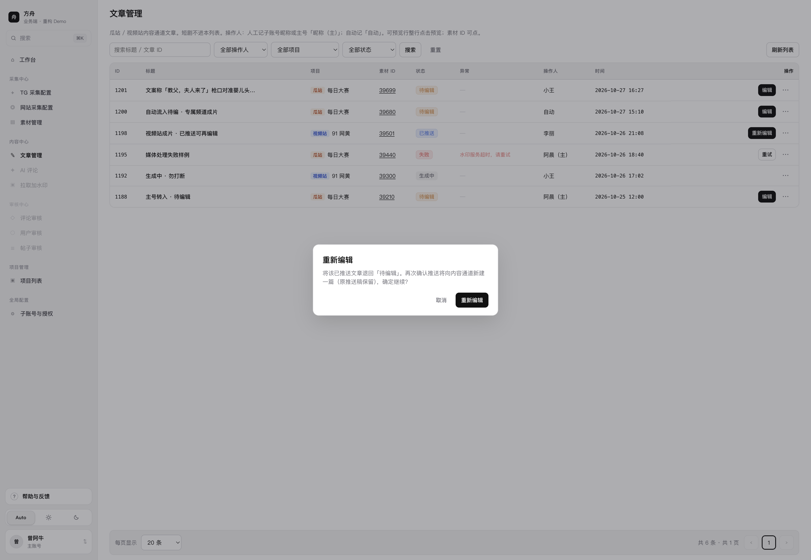
FZ-C-05
文章管理列表只展示已转编辑（含自动转编辑）成功、且带归属项目的瓜站 / 视频站稿。短剧项目不产生文章行，短剧推送仍在素材项目池完成。每一行必有项目 id；没有项目 id 的记录不进表。
可见范围 = 当前用户负责的项目 ∩ 会话具备文章管理权限。负责但无文章权限、或有文章权限但不负责该项目，都看不到该项目的行。列表页本身不提供「新建文章」；稿件只从素材转编辑链路进入。
对外状态只有四档：「生成中」「待编辑」「已推送」「失败」。媒体处理、上传、发布等是四档内部过程，不单独做筛选项，也不单独做行上主状态。失败行在「异常」列展示失败原因；其他状态该列为空。
列表查询带当前用户负责项目集合与文章管理权限。短剧项目 id 过滤掉。状态变更、删除、释放占用写回文章记录；释放与删除同时把素材项目池占用改回未使用。重新编辑把当前推送稿快照写入历史版字段后，将状态改回待编辑。操作人字段在手动操作时写当前账号展示名，自动链路写「自动」。
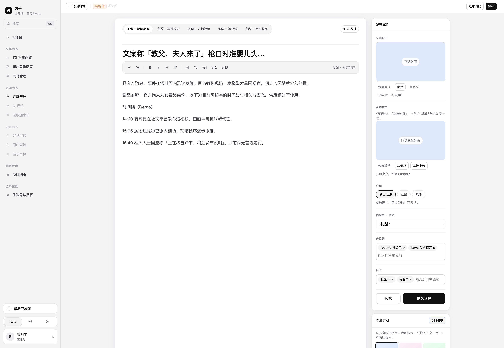
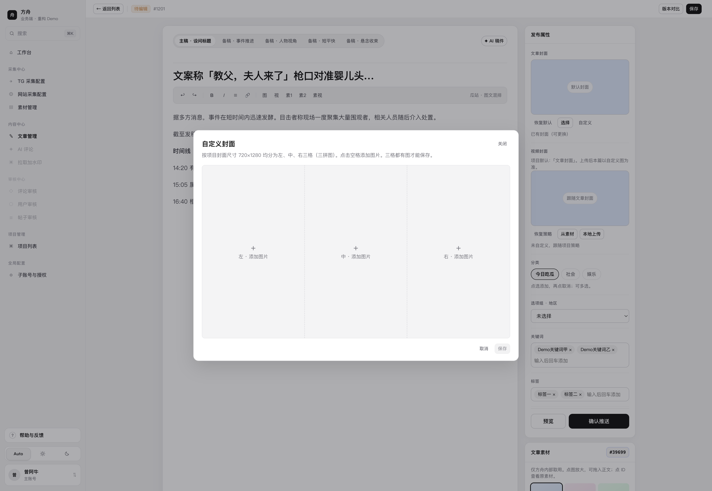
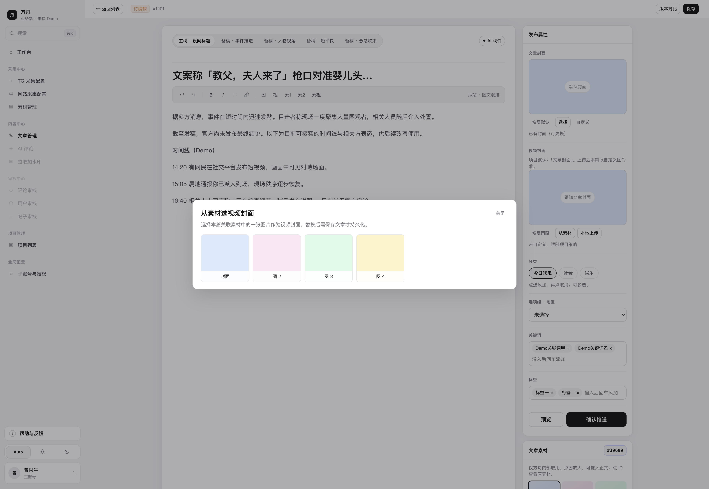
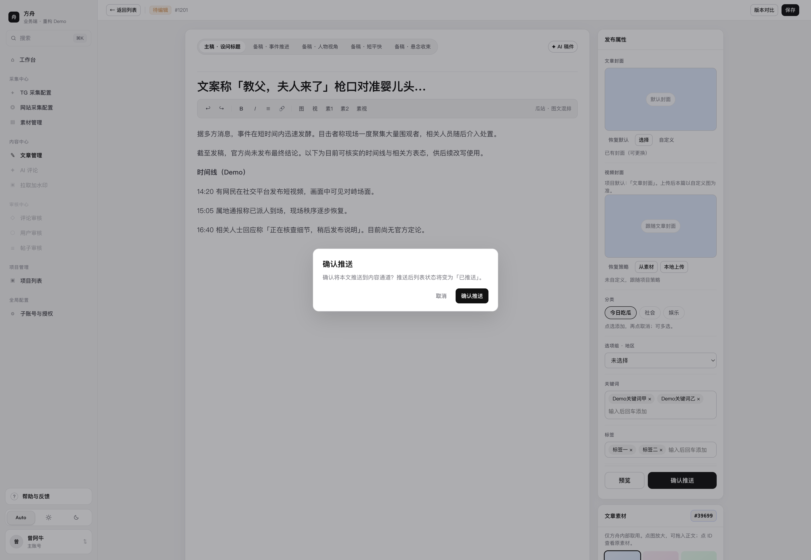
FZ-C-06
从文章列表「编辑」或「重新编辑」确认后进入。本页编辑单篇瓜站 / 视频站稿的标题、正文、发布属性、文章封面与视频封面，并使用右侧「文章素材」面板取用本篇关联媒体插入正文或作封面来源。待编辑状态下可保存或推送到该项目内容通道。短剧不进本页。
「生成中」可打开本页只读看进度，不能改字段、不能保存、不能推送。「失败」不在本页处理推送，回到列表用「重试」或「释放占用」。「已推送」须先在列表「重新编辑」退回待编辑后，才能再保存与推送。
项目「② 推送给业务方」打开自动时：稿件到达待编辑且内容就绪后，系统直接推到该项目内容通道，列表变为已推送，操作人记「自动」，附带项目默认 CMS 标识，不弹确认框。开关默认关闭；关闭时只有人点「确认推送」才会推。手动推送：子账号有 CMS 用子账号的，否则用项目默认 CMS。
remote/config（分类列表、option_groups 等），运营反选后再推回业务。编辑页读写该文章的标题、正文、封面、视频封面、分类、关键词、标签、地区与状态，并只读关联本篇的文章素材列表供插入与选封面。保存只更新稿件内容；「保存」到素材库是另写素材库，不改变文章状态。手动推送把当前稿交给所属项目内容通道并附 CMS 标识（子账号优先，否则项目默认），状态改为已推送，并留下可对比的推送版快照。自动推送走同一通道写入，触发者是项目开关，操作人记「自动」，附项目默认 CMS。
| 功能ID | 验收标准 | 完成 |
|---|---|---|
| FZ-C-01 | 流程图从采集到推送。待审核只有通过和驳回。瓜站 / 视频站有手动和自动转编辑，以及手动和自动推送。短剧不走转编辑，在项目池推分集媒体。推送带项目通道和 CMS（子账号或项目默认）。公共池只一份最新的。 | ☐ |
| FZ-C-02 | 页面按项目、采集号、频道、路由四块可验收。项目采集号进项目池；公共池采集号按路由外推。业务项目无路由。用户只点开始/停止采集；强制断开是次要排障。 | ☐ |
| FZ-C-03 | 申请/重新提交后有 2～3 工作日说明窗；生效后主域名与页面只读；同页多项目走加绑；技术接入中只读；删除二次确认；启动/暂停只在生效与暂停间切换。 | ☐ |
| FZ-C-07 | Admin 有网站接入请求列表。可标记完成或无法接入；完成后运营端变为生效中。他户/本户同域名已接入须标「同站可复用」。运营端无此入口。 | ☐ |
| FZ-C-04 | 三个列表同一条内容各只一行。待审核是通过和驳回。垃圾含系统拦截和人工驳回，只有手动通过。瓜站 / 视频站项目池是转编辑；短剧项目池是推送。已使用不能再操作。未使用的旧行会被 15 天内的新副本替换。 | ☐ |
| FZ-C-05 | 短剧不出现。四态操作矩阵正确：待编辑→编辑；已推送→重新编辑（二次确认后退回待编辑）；失败→重试 / 释放占用；生成中无主按钮。预览 / 版本对比 / 原素材 / 删除按规则显隐。删除与释放占用取消项目「已使用」。 | ☐ |
| FZ-C-06 | 待编辑可改标题正文与发布属性，可保存、预览、确认推送（二次确认）。空标题 / 空正文不打开推送确认。右侧文章素材可放大、插入正文、拖入、保存到库、打开原素材。自定义封面格数跟项目拼图；视频封面可从素材或本地替换。自动推送默认关。生成中不可保存推送。推送失败仍待编辑。 | ☐ |